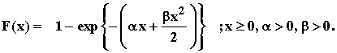
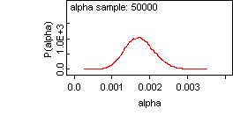
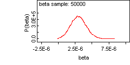
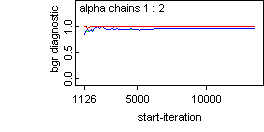
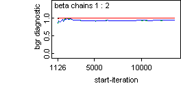
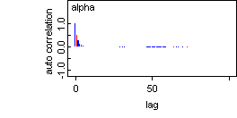
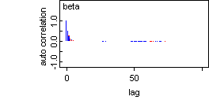

![[linearfailure_ex0]](linearfailure_ex0.bmp) Linear Failure Rate Model
Linear Failure Rate Model

model
{
for( i in 1 : N )
{
x[i] ~ dlin.fr(alpha, beta)
}
# Prior distributions of the model parameters
alpha ~ dgamma(0.001, 0.001)
beta ~ dunif(0, 1.0)
}
The data set is taken from DACS Software Reliability Dataset, Lyu (1996). The data represents the time-between-failures (time unit in miliseconds) of a software. The data given here is transformed from time-between-failures to failure times.
Lyu, M. R. (1996). Handbook of Software Reliability Engineering , IEEE Computer Society Press,
http://www.cse.cuhk.edu.hk/~lyu/book/reliability/
The MLE's are alpha = 1.7777e-03, beta=2.7776e-06
Data ( click to open )
Inits for chain 1 Inits for chain 2 ( click to open )
Results
Node statistics
mean sd MC_error val2.5pc median val97.5pc start sample
alpha 0.001736 3.851E-4 2.984E-6 0.001028 0.00172 0.00253 1001 50000
beta 3.013E-6 1.146E-6 8.734E-9 8.449E-7 2.985E-6 5.361E-6 1001 50000
Dbar Dhat DIC pD
x 1190.0 1188.0 1192.0 1.968
total 1190.0 1188.0 1192.0 1.968


